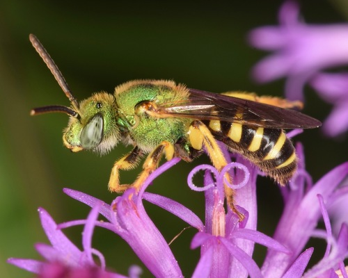

Bicoloured Sweat Bee
Agapostemon virescens native bee

Metallic-green communal ground-nesting bee; generalist on open flowers.
44 documented plant relationships.
sips nectar at
 Leslie Seaton, some rights reserved (CC BY)") BalsamrootBalsamorhiza sagittataBee Balm (Wild Bergamot)Monarda fistulosaBlanketflowerGaillardia aristata
BalsamrootBalsamorhiza sagittataBee Balm (Wild Bergamot)Monarda fistulosaBlanketflowerGaillardia aristata Nolan Exe, some rights reserved (CC BY), uploaded by Nolan Exe") Brittle Prickly-pearOpuntia fragilis
Brittle Prickly-pearOpuntia fragilis Douglas Goldman, some rights reserved (CC BY-SA), uploaded by Douglas Goldman") Canada GoldenrodSolidago canadensis
Canada GoldenrodSolidago canadensis KENPEI, some rights reserved (CC BY)") Common SunflowerHelianthus annuus
Common SunflowerHelianthus annuus Tom Pollard, some rights reserved (CC BY), uploaded by Tom Pollard") Evening PrimroseOenothera biennis
Evening PrimroseOenothera biennis Douglas Goldman, some rights reserved (CC BY-SA), uploaded by Douglas Goldman") FireweedChamaenerion angustifolium
FireweedChamaenerion angustifolium Douglas Goldman, some rights reserved (CC BY-SA), uploaded by Douglas Goldman") Flat-topped GoldenrodEuthamia graminifolia
Flat-topped GoldenrodEuthamia graminifolia Michael J. Papay, some rights reserved (CC BY), uploaded by Michael J. Papay") Flat-topped White AsterDoellingeria umbellataGiant Bur-reedSparganium eurycarpum
Flat-topped White AsterDoellingeria umbellataGiant Bur-reedSparganium eurycarpum Alan Prather, some rights reserved (CC BY), uploaded by Alan Prather") Giant HyssopAgastache foeniculum
Giant HyssopAgastache foeniculum Thayne Tuason, some rights reserved (CC BY-SA)") Golden TickseedCoreopsis tinctoria
Golden TickseedCoreopsis tinctoria Tero Laakso, some rights reserved (CC BY-SA)") Jerusalem ArtichokeHelianthus tuberosusMany-flowered Aster (Tufted White Prairie Aster)Symphyotrichum ericoidesMaximilian SunflowerHelianthus maximiliani
Jerusalem ArtichokeHelianthus tuberosusMany-flowered Aster (Tufted White Prairie Aster)Symphyotrichum ericoidesMaximilian SunflowerHelianthus maximiliani Sarah Johnson, some rights reserved (CC BY), uploaded by Sarah Johnson") MeadowsweetSpiraea alba
MeadowsweetSpiraea alba Caleb Catto, some rights reserved (CC BY), uploaded by Caleb Catto") Pale AgoserisAgoseris glauca
Pale AgoserisAgoseris glauca Philadelphia FleabaneErigeron philadelphicus
Philadelphia FleabaneErigeron philadelphicus Alan Rockefeller, some rights reserved (CC BY), uploaded by Alan Rockefeller") Pink SpireaSpiraea douglasii
Pink SpireaSpiraea douglasii Andrey Zharkikh, some rights reserved (CC BY)") Plains Prickly Pear CactusOpuntia polyacantha
Plains Prickly Pear CactusOpuntia polyacantha Joshua Mayer, some rights reserved (CC BY-SA)") Prairie Cinquefoil (Tall Cinquefoil)Drymocallis arguta
Prairie Cinquefoil (Tall Cinquefoil)Drymocallis arguta Meghan Cassidy, some rights reserved (CC BY-SA), uploaded by Meghan Cassidy") Prairie ConeflowerRatibida columniferaPurple ConeflowerEchinacea angustifoliaPurple Prairie CloverDalea purpurea
Prairie ConeflowerRatibida columniferaPurple ConeflowerEchinacea angustifoliaPurple Prairie CloverDalea purpurea Douglas Goldman, some rights reserved (CC BY-SA), uploaded by Douglas Goldman") Purple-stemmed Tall Aster (Swamp Aster)Symphyotrichum puniceum
Purple-stemmed Tall Aster (Swamp Aster)Symphyotrichum puniceum giantcicada, some rights reserved (CC BY), uploaded by giantcicada") Red Osier DogwoodCornus sericea
Red Osier DogwoodCornus sericea Douglas Goldman, some rights reserved (CC BY-SA), uploaded by Douglas Goldman") Self-healPrunella vulgaris
Self-healPrunella vulgaris Slender Cinquefoil (Graceful Cinquefoil)Potentilla gracilis
Slender Cinquefoil (Graceful Cinquefoil)Potentilla gracilis aarongunnar, some rights reserved (CC BY), uploaded by aarongunnar") Smooth AsterSymphyotrichum laeveSmooth Fleabane (Streamside Fleabane)Erigeron glabellusSneezeweedHelenium autumnale
Smooth AsterSymphyotrichum laeveSmooth Fleabane (Streamside Fleabane)Erigeron glabellusSneezeweedHelenium autumnale tzeducation, some rights reserved (CC BY), uploaded by tzeducation") Wild BergamotMonarda fistulosa
Wild BergamotMonarda fistulosa Tom Hilton, some rights reserved (CC BY), uploaded by Tom Hilton") Wild Blue FlaxLinum lewisii
Wild Blue FlaxLinum lewisii Pohled 111, some rights reserved (CC BY-SA)") Wild ChivesAllium schoenoprasum
Wild ChivesAllium schoenoprasum Ole Husby, some rights reserved (CC BY-SA)") Wild RaspberryRubus idaeus
Wild RaspberryRubus idaeus Michael J. Papay, some rights reserved (CC BY), uploaded by Michael J. Papay") Willow AsterSymphyotrichum lanceolatum
Willow AsterSymphyotrichum lanceolatum Don Loarie, some rights reserved (CC BY), uploaded by Don Loarie") Woods' RoseRosa woodsii
Woods' RoseRosa woodsii Douglas Goldman, some rights reserved (CC BY-SA), uploaded by Douglas Goldman") YarrowAchillea millefolium
YarrowAchillea millefolium